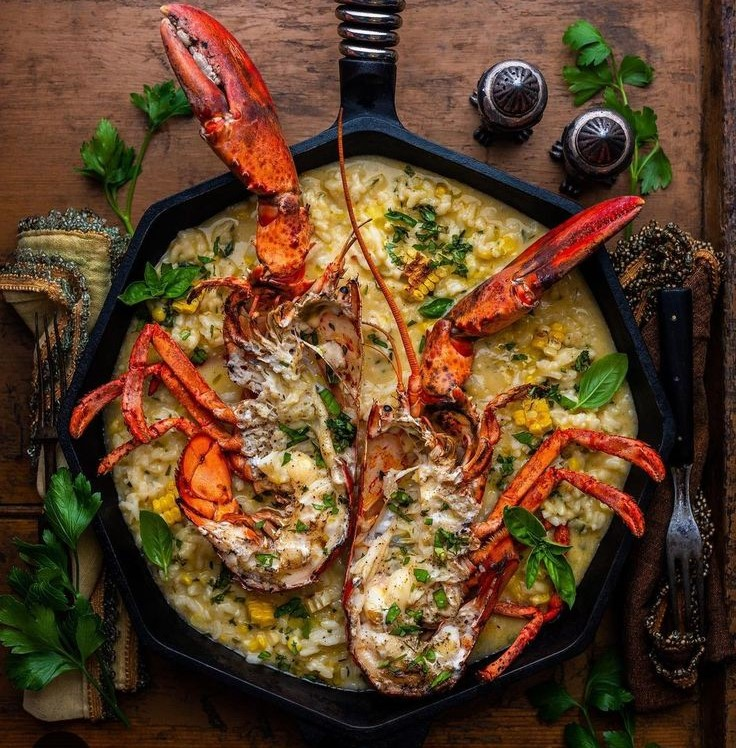

About us
Tidal's Kitchen
Tidal’s Kitchen was born under a moonlit sky in 2015, where fate brought Eurika Stephanie Oraño and Nathaniel Ricacho to an abandoned seaside villa. The tidal pools shimmered with life, whispering stories of the ocean’s treasures. Enchanted by the waves’ rhythm and the sea’s bounty, they dreamed of a place where nature’s magic and culinary artistry would dance together forever.
Dine with us
Experience Tidal’s Kitchen Diner’s cozy ambiance and a variety of
flavorful dishes crafted with fresh ingredients.
Perfect for breakfast, lunch,
or dinner, it’s a go-to spot for great food and a welcoming vibe.
Experience an Aquatic Adventure

Experience an aquatic adventure with Tidal’s Kitchen Diner, where coastal
charm
meets delicious dining. Enjoy the relaxing Aquatic vibe paired with a
menu crafted
to delight your taste buds. Perfect for family meals, casual
gatherings, or a quiet escape.
At Tidal’s, every visit is a refreshing experience.
Founders
Not a member? Register Now!
Contacts
Location: Cebu South Coastal Rd, Antuwanga, Cebu City, 6000 Cebu
Contact no. 79429-321-3218